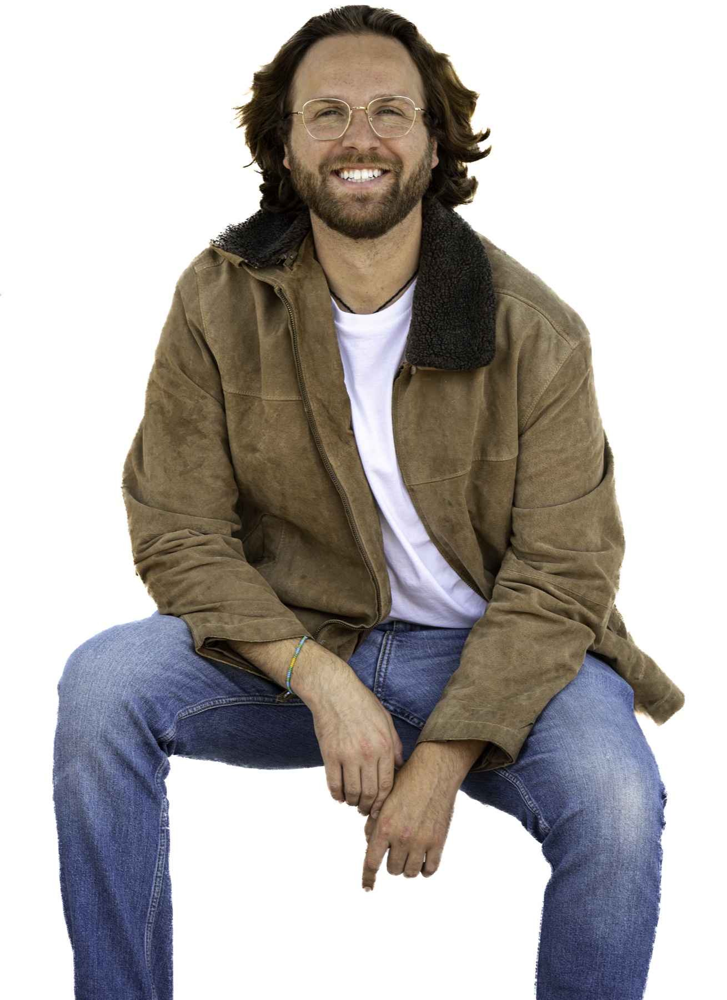
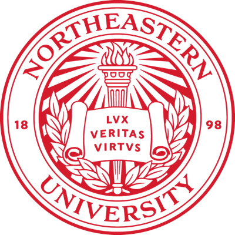

Capital News Service

David Landerman
Investigative Journalist
fmr Mechanical Engineer
A second-career professional with a wide range of experiences and the passion to dig deep on opaque bureaucracy. Eager to learn.
Articles

Design Projects
This unpublished work was a class assignment to take an already published article and use HTML and CSS to make it more engaging to readers. I chose The Price of Remission by David Armstrong of ProPublica. Besides altering the presentation, I added:
- New headline, subhead, lede
- Data visualizations comprised of data not included in the original article
As part of the assignment I sourced drug pricing history and expenditures from the Micromedex Redbook and Medicare Part D database.
After submission, I used AI to clean up the code and accomplish some more ambitious design elements.
View the redesignThis resume website was originally a course assignment. After submission, I used AI to clean up the code, tweak the aesthetics to look cleaner, implement feedback, and continuously improve upon it. Click this link to view the original.
View the originalWork Experience
The Howard Center for Investigative Journalism has published incredible enterprise journalism since its establishment at the University of Maryland in 2019. Months-long collaborations with outside newsrooms have led to in-depth exposés on topics such as rail safety, police brutality, and the urban heat effect. I began work in July of 2025 and have since been able to contribute to a brand new project, currently in development.
Howard Center ProjectsWhile a test engineer at ASML, my main duties involved keeping a lab running and assisting
other engineers construct/deconstruct their test setups and then assisting with the execution
of those tests. This could involve delicate vacuum systems, Helium leak checking, heater and
thermocouple placement, pneumatic valve operation, microscopy etc.
My main passion project, which led me to journalism, was advocating for fiscally pragmatic and sustainable 401(k) fund options. This project deepened in scope when I learned about the problems in the sustainable investment space. Wanting to use my company's resources/market safety for good, I drafted petition letters and slide decks for tailored pitches to management. These pitch decks were vigorously researched from hundreds of pages of shareholder materials and other approved statements from management to synthesize cohesive arguments for concrete action to lobby in support of the SEC's campaign to end subjective climate disclosures and the false-advertising of sustainable investment funds, a practice known as greenwashing.
I also researched and advocated for more transparency in our established 401(k) funds and better health insurance
benefits.
I worked as an R&D Co-op on the Knee Repair team at Smith & Nephew. My primary project revolved around the design of a special new drill that facilitates knee ligament reconstruction (i.e. ACL, PCL, small size meniscal root repairs, etc.). As part of a cross-functional team, I generated new parts and assemblies, iterated upon them, worked with machinists to produce prototypes, and tested those prototypes. In addition to these efforts, in order to streamline snap-fit design and spring selection, I created semi-automated Microsoft Excel spreadsheets which calculated relevant properties and values and assisted in utilization of these components. This was accomplished using numerous logic commands, mathematical models, and Excel's VBA editor. While on this co-op, I gained experience in test protocol and technical report drafting, as well as executing the tests themselves.
Visit Smith & NephewWhile a co-op at Watts Water Technologies I took on many tasks. Principal among which was a cost-saving measure to adapt one of our standard thermostatic mixing valves to perform the function of one of our specialty mixing valves used for emergency equipment. Other tasks included creating a more aesthetically pleasing design for that same standard valve, writing an instructional guide for a repair kit, coordinating nameplates for a group of valves and making sure their certifications were noted properly, assisting with lab set-up and testing, and other miscellaneous engineering projects.
Visit Watts Water TechnologiesThe Wind Technology Testing Center is a lab which structurally tests the integrity of full-scale wind turbine blades. The lab floor is around the size of a football field. Companies that make wind turbine blades send them to the WTTC where they are rigged up with equipment that measures the strength and deflection of the blade as it is pulled in different directions by high-powered cables. While a fellow there I assisted with day-to-day lab operations including blade static and fatigue testing, hard-point installation, winch operation, blade instrumentation, and small-scale equipment design projects.
Visit Massachusetts Clean Energy CenterEducation
University of Maryland
College Park, Maryland
Master of Journalism
Multi-Platform Journalism
Howard Center Fellow
Expected Graduation: May 2027

Northeastern University
Boston, Massachusetts
Bachelor of Science
Mechanical Engineering
Minor in Business Administration
Graduated: July 2018-Cum Laude